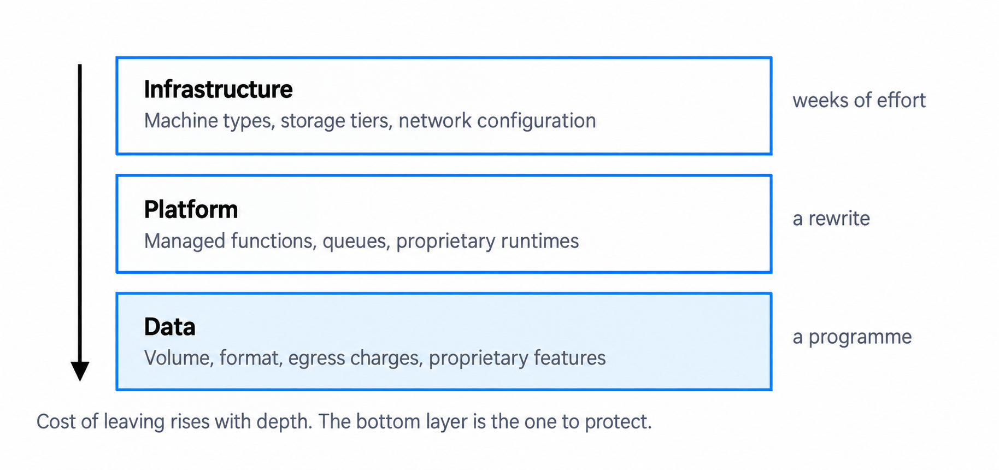
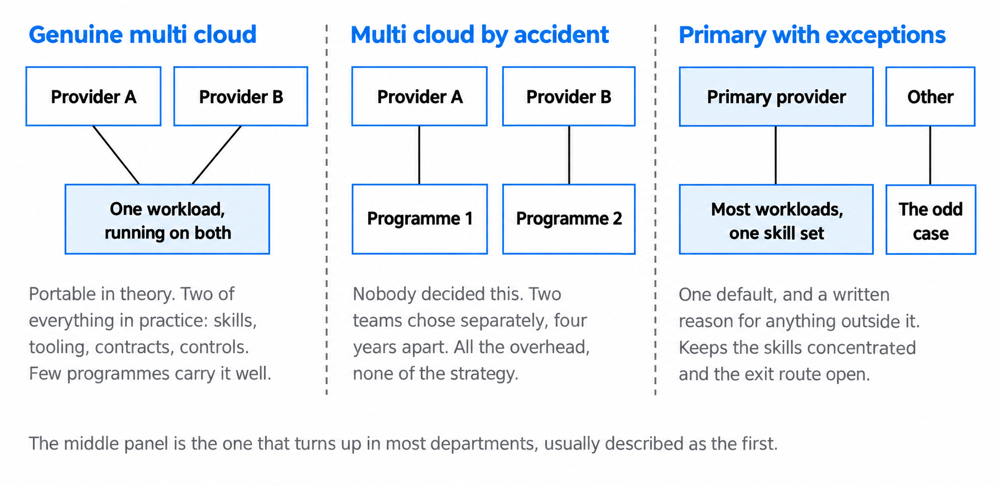
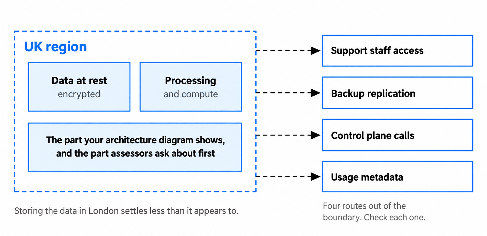
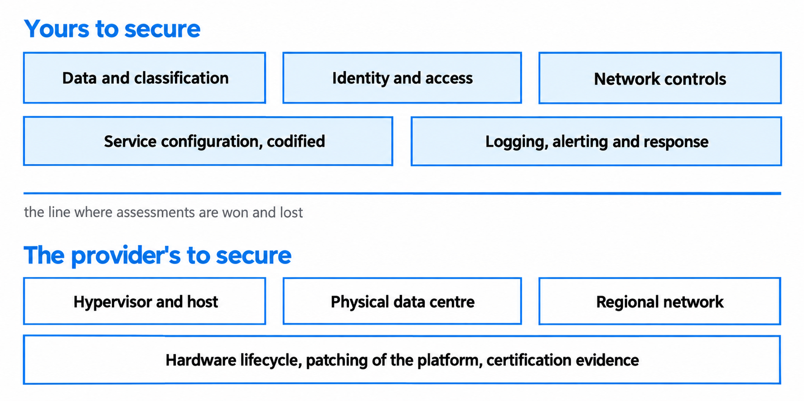
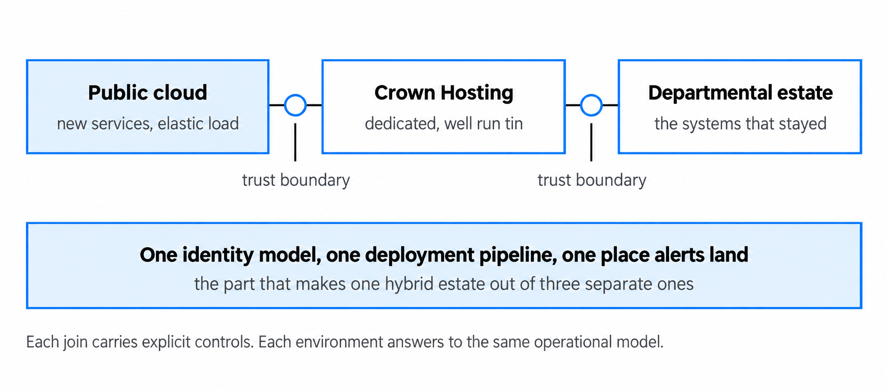

Cloud strategy in a government context
Make cloud choices from policy, evidence and operational reality.
You'll come away with:
- What Cloud First requires and what it does not decide for you
- How to compare hosting, provider and service-model options using evidence
- How to manage lock-in, concentration, data location and shared responsibility
- Ways to make cloud cost, operations and exit measurable from the start
Start with the need, not the provider
A cloud strategy is not simply a declaration that an organisation will use one provider, several providers or a hybrid estate. Government guidance on creating a cloud hosting strategy says to assess the current estate and future requirements before choosing an approach.
Begin with the outcomes the organisation needs and the constraints it must satisfy. Build a view of:
- services, users, demand and criticality
- current hosting, contracts, dependencies and legacy constraints
- security, privacy, resilience and data-location requirements
- delivery, operational and commercial capability
- whole-life cost, sustainability and exit needs
Then decide which hosting and service models fit. A strategy should give teams usable principles, decision criteria, approved patterns, exception routes and measures. It should also distinguish the intended target from a temporary state during migration.
Cloud is an option to evaluate, not the problem statement and not the outcome.
Apply Cloud First accurately
The government's Cloud First guidance says plans must show that cloud computing was considered before other options. When government organisations procure or renew services, they must consider and fully evaluate potential cloud solutions first.
This does not mean every workload must run in public cloud. It means cloud options receive proper consideration before another approach is chosen. The evaluation still needs to address user needs, value for money, security, privacy, service operation, legacy constraints, sustainability and the organisation's governance. If another option is stronger, record the evidence, trade-offs and authorised decision rather than treating a short justification as the whole process.
The Technology Code of Practice places Cloud First alongside open standards, security, privacy, reuse, purchasing and sustainability. A cloud decision that ignores those other points is incomplete.
Join architecture and procurement early
Architecture affects what can be bought, while the available commercial route affects what can be delivered. The Technology Code of Practice says a purchasing strategy must cover commercial and technology considerations and contractual limitations.
G-Cloud is one route for buying cloud hosting, software and support. It is not a blanket route for every technology requirement, and a supplier's presence on a framework is not architecture or security approval. Framework scope, award methods, terms and buying platforms change, so use the current Government Commercial Agency G-Cloud guidance and involve commercial colleagues before committing to a product or delivery date.
Before selecting a route or supplier, confirm:
- the service and outcome being bought, including what remains the department's responsibility
- the permitted award process, contract term and internal approvals
- pricing assumptions, discounts, minimum commitments and what happens when they end
- data access, intellectual property, support, subcontractors and audit rights
- transition, termination, data return and exit costs
Commercial, security, operational and architecture decisions should be developed together. A technically suitable service can still be unusable if the contract, assurance evidence or operating model does not meet the requirement.
Choose providers and service models from evidence
A provider's reputation or an existing organisational preference can inform a shortlist, but neither proves suitability. The NCSC's Cloud Security Principles require each cloud service and its provider to be analysed against the organisation's security needs and the available evidence. Secure configuration must then be considered separately.
| Decision area | Evidence to examine |
|---|---|
| Service fit | Confirmed requirements, service limits, roadmap and integration constraints. |
| Security and privacy | Control design, assurance scope, configuration responsibilities, incident process and data use. |
| Resilience | Failure modes, service-level commitments, recovery design, dependencies and tested recovery evidence. |
| Delivery and operation | Skills, support model, automation, observability and ability to operate the service throughout its life. |
| Commercial and cost | Whole-life cost, demand assumptions, commitments, licensing, support, transfer and exit charges. |
| Portability and exit | Data export, interfaces, proprietary dependencies, switching effort and contractual assistance. |
Do not assume that a certification covers every service, region or configuration you intend to use. Check its scope and the evidence behind it. Information classification is also an input to the risk assessment, not a provider approval: the Government Security Classifications Policy requires proportionate controls and local assurance.
Make lock-in and exit explicit
Some lock-in is unavoidable. Current government guidance on managing technical lock-in says its benefits can outweigh its disadvantages, but value and portability must be assessed together. Managed services may reduce operational work or improve delivery while increasing the effort needed to change provider.

Describe lock-in in concrete terms rather than labelling a design portable or proprietary. Record contractual commitments; provider-specific APIs, identity and operational tooling; data formats and volumes; transfer paths and charges; skills dependencies; and the estimated time and cost of switching.
Open standards, loose coupling and infrastructure as code can help, but none makes a service portable automatically. Test the parts of an exit that matter: data export and restoration, replacement of critical dependencies, access after termination and secure deletion. Scale the evidence to the impact of being unable to leave.
Choose single, hybrid or multi-cloud deliberately
Start with needs and risks, then choose the posture. Government hosting-strategy guidance warns against selecting a single, hybrid or multi-cloud label first and designing the strategy around it. It also notes that running an identical service across providers creates significant additional work to secure and operate.

Multi-cloud can mean one workload spanning providers, different services using different providers, or a primary provider with exceptions. These postures have different costs and risks. State which one you mean, at service and portfolio level.
For resilience, first test whether multiple availability zones or regions within one service meet the requirement. The NCSC recommends that approach where possible because ineffective cross-service failover can reduce availability. If a requirement genuinely needs providers to fail independently, model shared dependencies, data consistency, security controls and failover testing rather than assuming a second provider creates resilience.
Trace location, access and jurisdiction
A selected UK region answers only part of the data-location question. Government's Cloud guide for the public sector defines offshoring broadly enough to include where a service is managed and who can access UK-hosted data. It says departments must make risk-based decisions about location rather than applying a general prohibition on particular countries.

NCSC Principle 2 says to identify where data is stored, processed, managed and supported; who can access it; the provider's rights; and the legal jurisdictions involved. Include credentials, logs, metadata, models, backups and support data, not only the primary database. The region available for one service may not apply to every dependency.
For personal information, determine whether any arrangement is a restricted international transfer and apply the current ICO international-transfer guidance. Involve security, data protection, commercial and legal specialists where the decision depends on their judgement.
Define shared responsibility service by service
There is no single fixed line between the customer and cloud provider. The NCSC's shared responsibility guidance says the allocation changes with the service and deployment model and with how the provider implements it.

The department always remains responsible for selecting a service that can meet its security needs, securely configuring the controls it owns and deciding what data to place in it. For each component, name the control owner, provider commitment, configuration, evidence, monitoring and response. Cover identity and privileged access, network exposure, encryption and keys, secure configuration, vulnerabilities, logging and alerting, backups and recovery, incident handling, and offboarding.
Provider certifications and published control statements are inputs to assurance. They do not cover your architecture, configuration, identities or operating procedures unless the evidence explicitly says they do.
Design cost control into the service
Cloud cost is variable because consumption and design choices change. Government guidance on managing cloud spending recommends multidisciplinary ownership, spending visibility and regular optimisation. Architects affect cost through service choice, resilience, data transfer, logging, licensing, support and the resources that remain running.
At design time:
- estimate a range using stated demand, growth and retention assumptions
- identify the main cost drivers and a meaningful unit cost, such as per case or transaction
- define ownership metadata, budgets, forecasts and alerts using thresholds agreed by the organisation
- include non-production, security, monitoring, support, backup, recovery and data-transfer costs
- right-size and schedule resources where service requirements allow
- use commitments only for stable, understood demand and show the effect of unused commitment
- review actual cost against forecast and investigate material variance
Do not label a service cheap because it is serverless, managed or pay-as-you-go. Model the workload and pricing dimensions. Compare whole-life cost and operational effort, not only the first monthly estimate.
Make a hybrid estate intentional
A hybrid estate may be necessary because of migration sequencing, legacy constraints, security needs or specific infrastructure requirements. It becomes a strategy only when the environments are deliberately coordinated. Government guidance warns that retrospectively calling an uncoordinated estate hybrid merely describes its current state.

Define the interfaces, data flows, trust boundaries, service ownership and failure behaviour between environments. Connectivity might use private circuits, virtual private networks or protected public endpoints; select it from security, availability, performance and cost requirements rather than applying a universal rule.
Aim for consistent control outcomes across the service/access management, configuration, observability, incident response and change governance, without assuming every environment can use one tool or deployment pipeline. Where co-location is appropriate, Crown Hosting II is a current public-sector procurement route for data-centre space, connectivity and related services; it is not public cloud.
Give the transitional estate owners, measures, target dates and exit conditions. Otherwise a temporary arrangement can become permanent without an explicit decision.
Questions to ask before approval
- Which user and organisational needs does the strategy address?
- Which cloud and non-cloud options were evaluated, using what evidence?
- Which assumptions, constraints and risks could change the decision?
- Does the commercial route support the required service, term and exit?
- Where are data and derived data stored, processed, managed and supported?
- What does the provider control, what do we control and who owns each action?
- What concentration and lock-in are accepted, and by which authority?
- How have resilience and recovery been demonstrated?
- What drives cost, and how will forecast variance be detected and acted on?
- What makes the hybrid or multi-cloud parts one operable service?
- What evidence would cause the strategy to be reviewed?
This guide explains general cloud-strategy considerations for UK government. It does not replace departmental policy, security assessment, data-protection or legal advice, commercial assurance, the Technology Code of Practice or an applicable spending-control process.
Last reviewed September 2026 against the primary government, Government Commercial Agency, NCSC and ICO sources below. Frameworks and guidance change, so check the current source before relying on it.
- GOV.UK: Use cloud first
- GOV.UK: Technology Code of Practice
- GOV.UK: Creating and implementing a cloud hosting strategy
- Government Commercial Agency: G-Cloud 15
- NCSC: Cloud Security Principles
- NCSC: Asset protection and resilience
- Government Security Classifications Policy
- GOV.UK: Managing technical lock-in in the cloud
- GOV.UK: Cloud guide for the public sector
- ICO: International transfers
- NCSC: Cloud security shared responsibility model
- GOV.UK: Managing your spending in the cloud
- Government Commercial Agency: Crown Hosting II